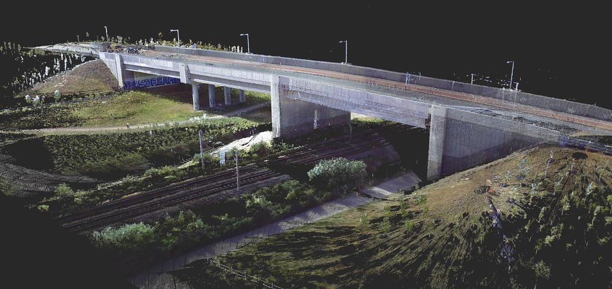

Mô hình 3D
Đang xây dựngDữ liệu quét laser mặt đất và GIS cho hầm ngầm, thử nghiệm tại cửa số 3 di tích địa đạo Vịnh Mốc (công trình số 14). Ảnh trên minh họa dạng dữ liệu đám mây điểm, không phải di tích.
Xem công trình liên quanCổng tri thức về di sản văn hóa Việt Nam và Quảng Trị
Bật tắt lớp chuyên đề, rê chuột lên ghim để xem tên, bấm vào ghim để mở hồ sơ. Tọa độ minh họa, chưa dùng cho đo đạc.
Mỗi di tích ghi cả địa danh tại thời điểm nghiên cứu và địa danh hành chính hiện hành. Trên điện thoại, kéo ngang để xem đủ các cột.
| Tên hiện hành | Địa danh tại thời điểm nghiên cứu | Địa danh hành chính hiện hành | Cấp xếp hạng | Nguồn dữ liệu | Cập nhật |
|---|

Dữ liệu quét laser mặt đất và GIS cho hầm ngầm, thử nghiệm tại cửa số 3 di tích địa đạo Vịnh Mốc (công trình số 14). Ảnh trên minh họa dạng dữ liệu đám mây điểm, không phải di tích.
Xem công trình liên quan 360°
Rê chuột để xoay góc nhìn
360°
Rê chuột để xoay góc nhìn
Ảnh toàn cảnh 360 độ tại các điểm di tích. Ảnh minh họa: Thành cổ Quảng Trị. [Danh sách điểm VR360 – chờ cung cấp]
Lộ trình tham quan số nối các điểm di tích theo chủ đề. [Nội dung tour – chờ biên soạn]
Tư liệu ảnh, bản đồ cổ, hiện vật số. Bộ ảnh Di tích lịch sử tỉnh Quảng Trị (3300/2023/QTG) sẽ thay các ảnh minh họa dưới đây khi đủ quyền công bố. Bấm vào ảnh để xem lớn.